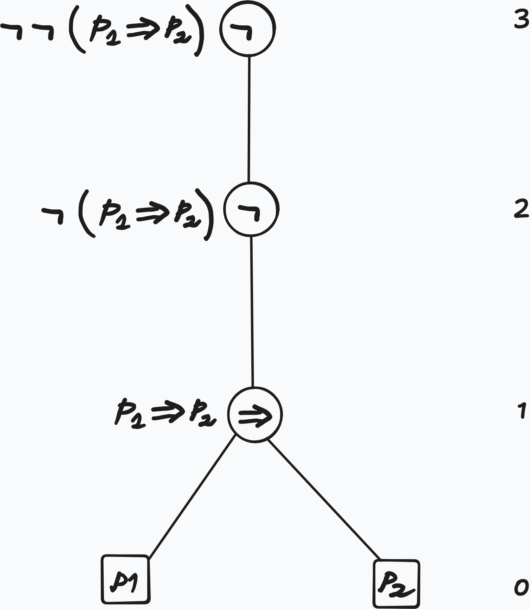

2 Lecture 2 - Height and Subformulas
Overview
- We provide a fourth, iterative set construction for the language of propositional logic.
- We give two equivalent definitions for the height of a formula.
- We give two equivalent definitions of a function that gives the list of subformulas of a formula
Recurisve Set Construction
We define \(\F{0}\) iteratively as follows:
\[ \begin{aligned} &\F{0} := \mathcal{A} \\ &\F{1} := \F{0} \cup \Set{\neg\varphi}{\varphi \in \F{0}} \cup \Set{\varphi\diamond\psi}{\varphi,\psi \in \F{0}} &&\text{($\diamond\in\mathcal{C}$)} \\ &\F{n} := \F{n-1} \cup \Set{\neg\varphi}{\varphi \in \F{n-1} \setminus \F{n-2}} \cup \Set{\varphi\diamond\psi}{\varphi, \psi \in \F{n-1}} &&\text{($n\geq 2$)} \end{aligned} \]
With this construction it follows that:
\[ \F{n} \subseteq \F{n + 1} \]
Example 2.1 \(\neg\neg P_4 \in \F{2} \subseteq \F{3} \subseteq\dots\)
but \(\neg\neg P_4 \notin \F{1}\), because \(\neg{P_4} \notin \F{0}\)
Now we make the following definition:
Definition 2.1 \[ \mathcal{F} := \bigcup_{n \in \Nat}\F{n}% math here \]
and we claim:
Lemma 2.1 \[\mathcal{F} = \Fof{\mathcal{A}}\]
Where \(\Fof{\mathcal{A}}\) is defined in Definition 1.5
Proof. To prove \(\mathcal{F} \subseteq \Fof{\mathcal{A}}\), it suffices to show that
\[ \F{n} \subseteq \Fof{\mathcal{A}}, \quad \forall n, \, \text{by induction on $n$} \]
To conclude the proof we need to show that \(\F{A} \subseteq \mathcal{F}\)
Definition 2.2 (Height of Formula - Set Approach) For all \(\varphi\in\mathcal{F}\), there is a well defined natural number \(\Height{\varphi}\in\Nat\):
\[ \Height{\varphi} := \mathrm{min}\Set{n\in\Nat}{\varphi\in\F{n}} \]
called the height of \(\varphi\)
We give another, a more computational definition for the height.
Definition 2.3 (Height of a Formula - Computational Approach) We define \(\Height{\cdot}\) recursively on the structure of a formula \(\phi\) as follows:
\[ \begin{aligned} &\Height{P_i} = 0 &&\text{($P_i\in \mathcal{A}$)}\\ &\Height{\neg\varphi} = 1 + \Height{\varphi} \\ &\Height{\varphi\diamond\psi} = 1 + \mathrm{max}(\Height{\varphi}, \Height{\psi}) &&\text{($\diamond\in\mathcal{C}$)} \end{aligned} \]
Remark 2.1 (Pattern Matching). Such inductive (recursive) definitions are also called pattern matching
Example 2.2 (Derivation of Height) \[ \begin{aligned} \Height{\neg\neg(P_1 \Rightarrow P_2)} &= 1 + \Height{\neg(P_1 \Rightarrow P_2)} \\ &= 1 + 1 + \Height{P_1 \Rightarrow P_2} \\ &= 1 + 1 + \mathrm{max}(\Height{P_1}, \Height{P_2}) \\ &= 1 + 1 + \mathrm{max}(1, 1) \\ &= 1 + 1 + 1 \\ &= 3 \end{aligned} \]
Obervation:
We observe that the height of a formula is the height of its syntax tree

We want to define a function
\[ \mathrm{sf}: \Fof{\mathcal{A}} \to \mathcal{P}(\Fof{\mathcal{A}}) \]
mapping a formula to its set of subformulas. For this we are going to define functions \(\Subf{i}: \F{i} \to \Pow{\mathcal{F}}\) as follows:
Definition 2.4 (Set Construction of \(\mathrm{sf}\)) \[ \begin{aligned} &\Subf{0}(P_i) := \{P_i\} \\ &\Subf{n}(\neg\varphi) := \{\neg\varphi\} \cup \Subf{n-1}(\varphi) \\ &\Subf{n}(\varphi\diamond\psi) := \{\varphi\diamond\psi\} \cup \Subf{n-1}(\varphi) \cup \Subf{n-1}(\psi) \end{aligned} \]
Then \(\mathrm{sf}\) can be defined as
\[ \begin{aligned} \mathrm{sf}&:\mathcal{F} \to \Pow{\mathcal{F}} \\ &:\varphi\mapsto\Subf{\Height{\varphi}}(\varphi) \end{aligned} \]
We give another, more computational approach, by defining \(\mathrm{sf}\) recursively on the structure of wffs as a function \(\mathrm{sf}:\WFF \to [\WFF]\)
Definition 2.5 (List Construction of \(\mathrm{sf}\)) \[ \begin{aligned} &\mathrm{sf}(P_i) := [P_i] \\ &\mathrm{sf}(\neg\varphi) := [\neg\varphi] \concat \mathrm{sf}(\varphi) \\ &\mathrm{sf}(\varphi\diamond\psi):= [\varphi\diamond\psi] \concat \mathrm{sf}(\varphi) \concat \mathrm{sf}(\psi) \end{aligned} \]
Example 2.3 (Derivation of the List of Subformulas with \(\mathrm{sf}\)) \[ \begin{aligned} \sfn{P_1 \lor \neg P_2} &= [P_1 \lor \neg P_2] \concat \sfn{P_1} \concat \sfn{\neg P_2} \\ &= [P_1 \lor \neg P_2] \concat [P_1] \concat [\neg P_2] \concat \sfn{P_2} \\ &= [P_1 \lor \neg P_2] \concat [P_1] \concat [\neg P_2] \concat [P_2] \\ &= [P_1 \lor \neg P_2, P_1, \neg P_2, P_2] \end{aligned} \]
Summary
- iterative set construction \(\F{i}\) - the language of propositional logic as infinite union of such
- two definitions for \(\mathrm{ht}\) - height of a formula
- two definitions for \(\mathrm{sf}\) - list or set of subformulas of a formula